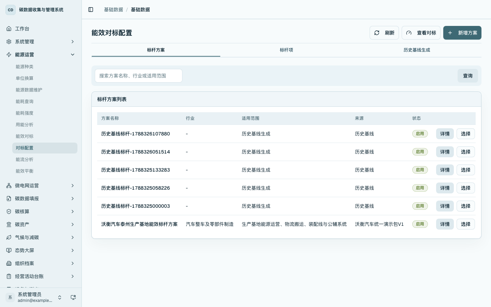
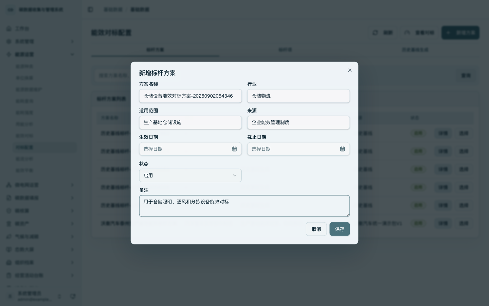
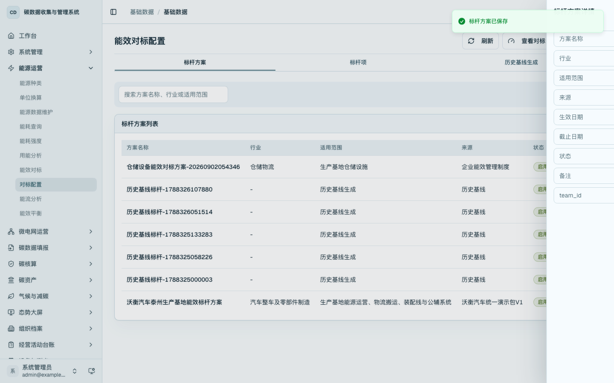
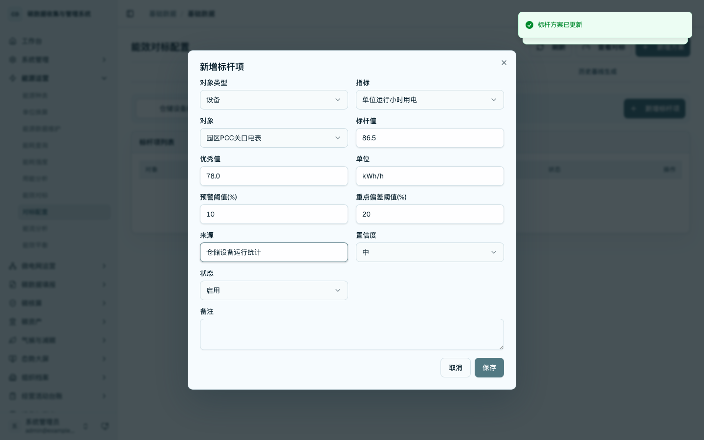
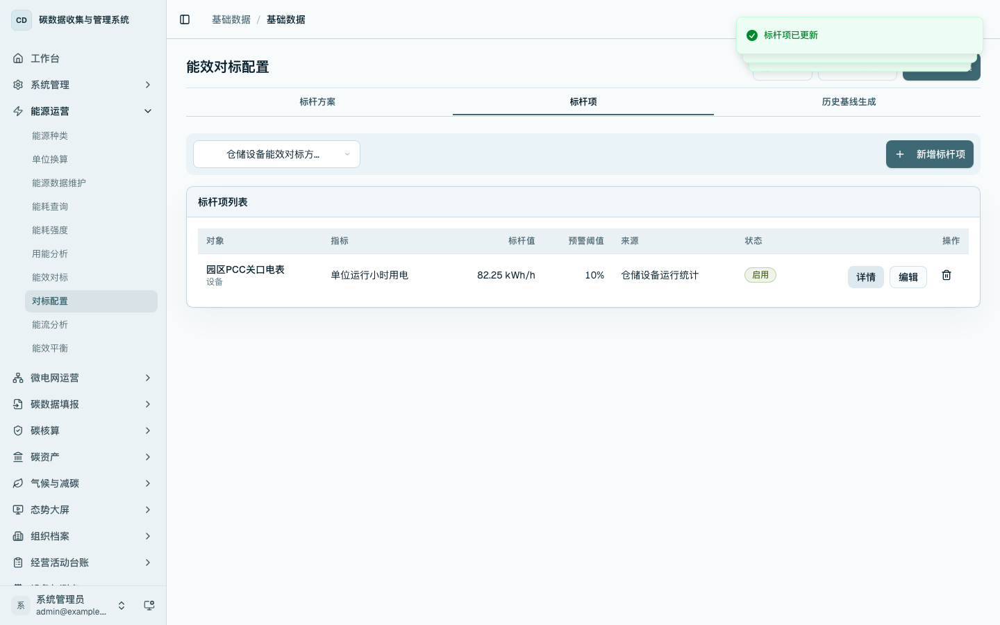
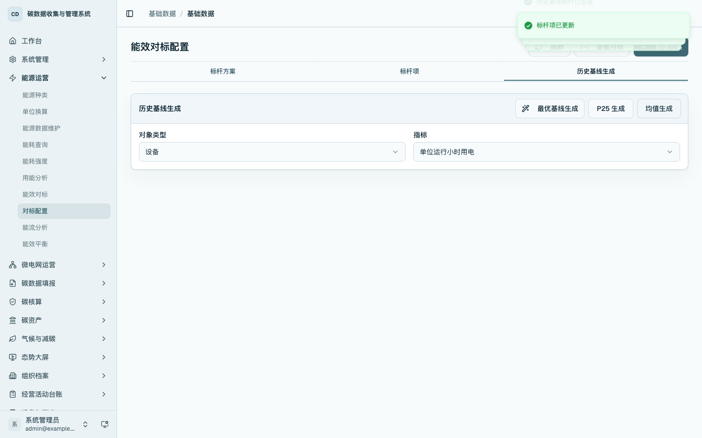
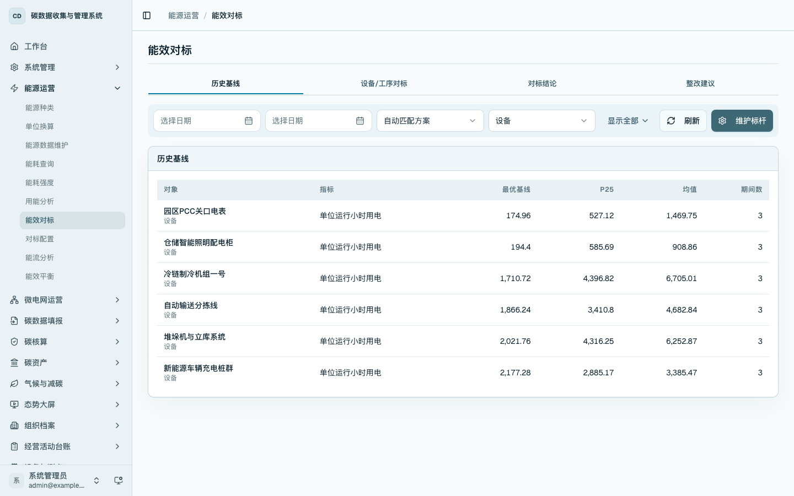

能效对标配置
本章说明如何维护能效对标所需的标杆方案、标杆项和历史基线。对标配置用于明确“拿什么对象、什么指标、什么阈值进行比较”，分析页面只展示结果，不直接维护配置数据。
菜单位置
- 侧边栏：进入「能源运营 / 对标配置」，打开
/data/energy-benchmark。 - 数据管理入口页：进入
/platform的「能源运营」分组，点击「能效对标配置」。 - 能效对标分析页：在
/energy/benchmark点击「维护标杆」进入配置页。
标杆方案维护
进入 /data/energy-benchmark，在「标杆方案」页签查看已维护的对标方案。可按方案名称、行业或适用范围查询，并通过详情查看方案字段。

点击「新增方案」，维护方案名称、行业、适用范围、来源、状态和备注。保存后，方案出现在标杆方案列表中。

点击方案行的「详情」，查看已保存字段的回显，用于确认方案来源、适用范围和启用状态。

标杆项维护
切换到「标杆项」页签，先选择一个标杆方案，再点击「新增标杆项」。标杆项可按设备、区域、企业等对象维护指标、标杆值、优秀值、预警阈值、重点偏差阈值和来源。

保存后可在列表中查看标杆项，并通过「编辑」调整标杆值、阈值或来源。列表回显更新后的结果。

历史基线生成
切换到「历史基线生成」页签，选择对象类型和指标后，可按最优基线、P25 或均值方式生成历史基线标杆。该操作用于将已有能源运行数据沉淀为企业自有对标口径。

分析页入口
进入 /energy/benchmark 查看对标分析结果。页面右上角提供「维护标杆」入口，用户可从分析结果返回配置页调整对标方案和标杆项。

操作要点
- 标杆方案用于管理口径，标杆项用于管理具体对象和指标。
- 设备和区域应从主数据中选择，避免手工输入造成对象不一致。
- 历史基线生成依赖已有能源运行数据；没有连续数据时，应先补齐能源事实数据。
- 对标结果查看在
/energy/benchmark完成，配置维护在/data/energy-benchmark完成。